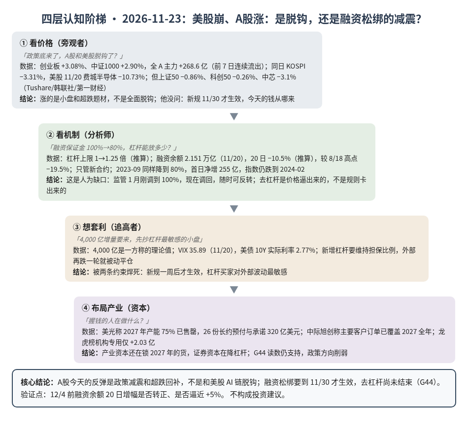
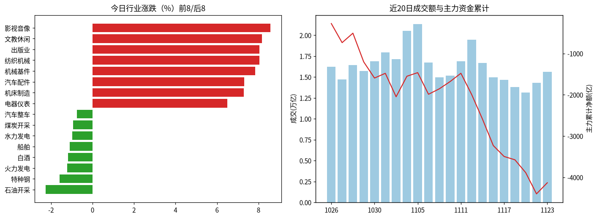
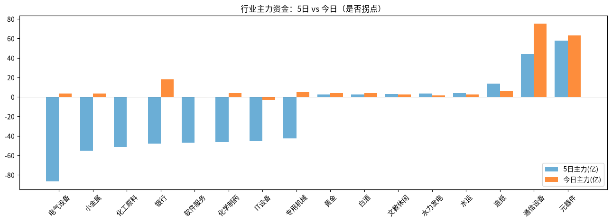

A股投研日报 · 2026-11-23（四层认知版）
- 主线
- 美股 AI 链崩、韩股续跌，A股靠周末稳市三箭和超跌回补，小盘领涨
- 最重要变化点
- 全 A 主力由 −514.9 亿转为 +268.6 亿，七连流出后首日流入；同日 KOSPI −3.31%
- 机制含义
- 融资保证金 100%→80% 是人为松绑，11/30 才生效；今天的钱是预期和回补，不是新杠杆
- 下一个观察点
- 12/4 融资余额较 11/20 的 2.151 万亿回升 ≥ +3%；仍下降则反弹无杠杆支撑
本报告为基于公开数据的研究分析，不构成投资建议。
方法：四层认知阶梯 + 历史周期律。数据 Tushare（见附录）。不构成投资建议。
今日市场概况
上证 +0.15% 收 3,538.95；创业板 +3.08% 收 2,280.20，中证1000 +2.90%，科创50 −0.26%，上证50 −0.86%。成交 15,640 亿元，是 20 日均 16,353 亿元的 96%；上涨 4,658 家（83.6%），个股中位数 +2.4%。全 A 主力 +268.6 亿元。流入居前：通信设备 +75.2 亿、元器件 +63.0 亿、汽车配件 +22.1 亿；流出居前：半导体 −3.8 亿、IT设备 −3.5 亿、环保 −3.4 亿（Tushare）。海外：美股 11/20 纳指 −5.28%、费城半导体 −10.73%，英伟达 −14.01%，路透称 SEC 在查其会计（源）；美债 10 年期 11/20 收 4.92%，单日 −12bp，实际利率 2.77%（源）；KOSPI −3.31% 收 4,708.54，连续两日卖出侧车，外资连续第 7 日净卖（源）；DDR5 16Gb 现货 60.70 美元，较上周五 60.667 持平（源）。
⚠️ VIX 预警：VIX 11/20 收 35.89（北京时间 11/21 05:00），首次收上 30 和 35。历史上首次收上 30 后买入标普：1 个月胜率 69.1%、平均 +2.2%，3 个月胜率 73.4%、平均 +5.1%；无条件基准分别为 63.8%/+0.8%、70.2%/+2.4%（N=94，本地回测）。
变化点
世界观定位：阶段不变（三国→楚汉过渡带），回退条件不变。世界指标今日天气：整体多云：钱开始变紧、股市偏贵偏热、AI 链有裂缝、中国经济还没回暖，留意。本周变化：③ 🔴→🟡（美国保证金债务同比 +31.4%→+22.4%）。今日两条提醒：A股融资余额 20 日 −10.5%，越过 −10% 危险线；MOVE 106.3，越过警戒线。原型：2023 年 8 月同样把融资保证金降到 80%，首日融资净增 255 亿元，指数仍跌到 2024 年 2 月（源）。
和上周五、上周比：半导体主力从 −112.0 亿收窄到 −3.8 亿；上涨占比从 5.6% 到 83.6%。上周一（11/16）全 A −640.0 亿。同一天韩股再跌 3.31%，A股没跟，差别在周末政策，不在基本面。
看价格：「政策底来了，A股和美股脱钩了？」涨的是小盘和超跌题材：机器人、短剧、CPO、PCB；上证50、科创50 收跌，中芯 −3.1%。他没问：新规 11/30 才生效，今天的钱从哪来。
看机制：「保证金调到 80%，杠杆能放多少？」上限从 1 倍升到 1.25 倍（推算），只管新开合约（源）。融资余额 11/20 为 2.151 万亿，比 20 个交易日前少 10.5%（推算，Tushare），离 8/18 高点 2.671 万亿差 19.5%。去杠杆是价格跌、担保比例被打穿逼出来的，不是规则卡出来的。监管 1 月刚把比例调到 100%（源），现在调回：人为缺口，随时可反转。风险敞口接口：复核后有效断供 Δ$≈0。
想套利：「4,000 亿增量要来，先抄小盘」。4,000 亿是一方称的理论值。卡住它的有两条：新规一周后才生效；新增杠杆最怕外部再跌，VIX 35.89、实际利率 2.77%，美股不稳，加杠杆的人最先被平仓。
布局产业：产业资本和证券资本走反方向。美光称 2027 年产能 75% 已售罄，26 份长约的预付和承诺合计 320 亿美元（公司称，源）；中际旭创称主要客户订单已覆盖 2027 年全年（公司称，源）。股价在杀估值，锁货的人没停。G44 读数仍支持，政策方向削弱，状态不改。
判断：美国这轮从查出口（加州传票）推进到查账（SEC），矛头从「卖给谁」转到「收入质量」，即厂商给客户融资再卖芯片的循环。推断下一步是披露和审计层面的追问，AI 估值继续承压；中国 AI 硬件链短期跟着挨打，但订单来自同一批海外客户，跌的是估值，单子还没少。
中长期展望（3–12 个月与 2027）
3–12 个月：AI 链从讲故事转到查账。压力从小云厂信用移向供应商收入质量（P070 削弱），但四大云未下修。A股去杠杆未完（G44），稳市政策只减震；实际利率 2.77% 仍高（G45），12/10 加息（P071）是下一道坎。
2027：P023 仍是总闸门；DDR5 现货不跌（G42），存储长约照签。
什么会改变展望：①融资余额 20 日增幅 ≥ +5%（G44 证伪）；②第二家小云厂 CDS >1,000bp，或任一大云下修资本开支（P070）；③英伟达 10-Q 推迟或重述。
七、明日/本周验证点（可证伪）
- 11/24 全 A 主力连续第 2 日净流入；转为流出超 200 亿则只是一日回补。
- 12/4 融资余额较 11/20（2.151 万亿）回升 ≥ +3%；仍下降则政策没带来杠杆。
- 至 11/27 KOSPI 收回 5,000 点（11/23 为 4,708.54）。
- 至 11/27 DDR5 16Gb 现货跌破 58.85 美元，则 G42 逼近证伪。
附录 A：机会表、检查清单、验证点回顾、风险复核
机会表（产业/环节层面，不构成投资建议）
| 环节 | 变化信号 | 认知层级 | 关键风险 / 证伪 |
|---|---|---|---|
| 存储长约、光模块等有 2027 年订单的 AI 硬件环节 | 美光 2027 年产能 75% 售罄、320 亿美元长约；中际旭创订单覆盖 2027 | 第 2→4 层 | 四大云任一家下修 2027 资本开支（P023、P070） |
| 杠杆敏感的小盘、题材（机器人、短剧） | 融资保证金下调，今日领涨 | 第 3 层：陷阱 | 12/4 融资余额仍降；外部 VIX 再上 40 |
| PCB 上游材料 | 生益称 11 月起 M6 及以下涨 15%、PP 涨 25%（源） | 第 2 层 | 重复下单回吐（G28、P042） |
检查清单应用
- 缺口性质：杠杆松绑是人为缺口（监管 1 月收、11 月放，可随时反转）；AI 链的跌是估值和监管调查，实物端（DDR5、长约）没有缺口变化。
- 替代弹性：散户杠杆可被公募赎回、北向流出抵消；产业端客户换供应商的弹性低（长约含付款义务）。
- 领先 vs 滞后：领先＝融资余额 20 日变化、VIX 期限结构、DDR5 现货、CDS；滞后＝季报利润、TTM PE、指数。
上一交易日验证点回顾（11/20 → 11/23）
| # | 验证点 | 读数 | 判定 |
|---|---|---|---|
| 1 | 11/23 半导体主力流出收窄到 −30 亿以内 | −3.8 亿 | 命中 |
| 2 | 超声、满坤主力合计仍净流入 | 超声 −2.46 亿、满坤 +0.45 亿，合计 −2.0 亿（未到 −5 亿一日游线） | 未命中 |
| 3 | 至 11/27 KOSPI 收回 5,000 点 | 4,708.54（11/23） | 待验证 |
| 4 | 至 11/27 DDR5 16Gb 跌破 58.85 美元 | 60.70（11/23） | 未触发 |
供应链风险敞口（人工复核版）：脚本版见 risk_section_20261123.md。口径为 GB300/NVL72 当量柜年化系统价值；Δ$ 为事件类型假设模板，仅用于排序，非预测。脚本 2 条，误匹配 2 条（美光长约售罄、高盛存储展望，均非断供）。复核后今日有效断供 Δ$≈0，基线维持年化 EL 57.7 亿美元（10/21）。采集降级：GDELT 限流或 0 篇；巨潮公告匹配未恢复。
总账（今日已改）：G44 追加削弱证据（融资保证金下调，读数仍在去杠杆）；P070 追加削弱证据（SEC 查英伟达会计、循环融资担忧），概率 0.55 不动；G42 追加支持证据（DDR5 60.70 美元）。状态与概率均不改。
个股读数说明：中芯、超声、满坤、中京、崇达、世运、胜宏、生益、中际旭创、新易盛、天孚、宇树的涨跌幅与主力净额来自 Tushare daily / moneyflow（11/23），只用来说明资金方向，不构成个股买卖建议。
世界指标数据说明：今晚 update.py 数据源 15/15 成功、灰显 0 项（20:18 起跑，约 12 分钟，box 重置后缓存重建；先于日报取数）；世界页已提交推送（world: 20261123）。AI 泡沫监控阶段读数「一顶后回撤」。五盏灯 ② 用的 10Y 实际利率 2.88% 为 FRED 11/19 读数，正文 2.77% 为美国财政部 11/20 读数。

一句话总结：减震器能挡住踩踏，挡不住估值重定价；锁货的是产业，降杠杆的是散户。
本报告为基于公开数据的研究分析，不构成任何投资建议。
附录：市场数据（证据底稿）


| 收盘 | 今日% | 5日% | 20日% | MA20 | 成交(亿) | |
|---|---|---|---|---|---|---|
| 上证指数 | 3,538.95 | 0.15 | -1.77 | -4.29 | 3,628.61 | 7,385.00 |
| 深证成指 | 10,454.37 | 1.93 | -2.21 | -9.36 | 10,989.37 | 4,091.88 |
| 创业板指 | 2,280.20 | 3.08 | -1.72 | -13.57 | 2,435.56 | 1,685.42 |
| 科创50 | 1,227.89 | -0.26 | 1.17 | -6.66 | 1,245.11 | 895.55 |
| 上证50 | 2,762.10 | -0.86 | -0.16 | -0.25 | 2,771.92 | 1,402.37 |
| 沪深300 | 3,958.29 | 0.09 | -0.54 | -3.54 | 4,027.22 | 4,582.79 |
| 中证500 | 6,128.99 | 2.05 | -2.67 | -8.70 | 6,442.21 | 2,577.60 |
| 中证1000 | 5,812.32 | 2.90 | -5.71 | -12.34 | 6,305.83 | 2,904.33 |
行业资金热力（按5日主力净额排序，前8/后8）
| industry | 今日% | 5日% | 20日% | 今日主力(亿) | 5日主力(亿) | 资金连续天数 |
|---|---|---|---|---|---|---|
| 元器件 | 4.8 | 1.0 | -17.5 | 63.0 | 57.6 | 1.0 |
| 通信设备 | 6.3 | 0.6 | -27.9 | 75.2 | 44.3 | 1.0 |
| 造纸 | 5.8 | -2.2 | 1.7 | 6.0 | 13.9 | 16.0 |
| 水运 | 0.4 | 2.0 | -0.0 | 2.7 | 4.0 | 1.0 |
| 水力发电 | -1.0 | 1.2 | 3.0 | 1.4 | 3.7 | 2.0 |
| 文教休闲 | 8.2 | 1.9 | 5.3 | 2.5 | 3.1 | 2.0 |
| 白酒 | -1.2 | -3.6 | 8.3 | 4.2 | 2.6 | 2.0 |
| 黄金 | 5.8 | -0.6 | -10.9 | 4.2 | 2.5 | 1.0 |
| 电气设备 | 3.1 | -6.4 | -6.9 | 3.3 | -86.6 | 1.0 |
| 小金属 | 3.4 | -6.0 | -12.8 | 3.7 | -55.0 | 1.0 |
| 化工原料 | 4.2 | -2.8 | -4.7 | 0.3 | -51.3 | 1.0 |
| 银行 | -0.7 | 0.5 | 8.6 | 17.9 | -47.9 | 1.0 |
| 软件服务 | 3.9 | -1.4 | -4.7 | -0.5 | -47.0 | -3.0 |
| 化学制药 | 4.6 | -6.6 | -4.0 | 3.8 | -46.3 | 1.0 |
| IT设备 | 3.6 | -2.5 | -12.1 | -3.5 | -45.6 | -3.0 |
| 专用机械 | 6.2 | -5.0 | -12.2 | 5.0 | -42.8 | 1.0 |
市场情绪时间序列（近10日）
| trade_date | 成交(亿) | 上涨占比% | 主力净额(亿) | 个股中位涨跌% |
|---|---|---|---|---|
| 20261110 | 15167.5 | 76.7 | 175.5 | 1.3 |
| 20261111 | 16886.9 | 63.5 | 201.5 | 0.6 |
| 20261112 | 19458.7 | 15.7 | -516.5 | -1.6 |
| 20261113 | 16670.7 | 13.7 | -595.2 | -2.0 |
| 20261116 | 14941.6 | 20.4 | -640.0 | -2.1 |
| 20261117 | 14675.2 | 23.8 | -264.0 | -1.3 |
| 20261118 | 13800.2 | 23.6 | -80.3 | -1.2 |
| 20261119 | 13145.8 | 11.6 | -310.4 | -2.6 |
| 20261120 | 14311.1 | 5.6 | -514.9 | -5.1 |
| 20261123 | 15639.6 | 83.6 | 268.6 | 2.4 |
今日上涨4658家/下跌783家，涨幅≥9.8% 260家、跌幅≤-9.8% 7家¹。
龙虎榜侧写：机构专用席位合计 +2.03 亿；净买入居前 冰山冷热(+4.35亿)、宇树科技(+1.25亿)、风华高科(+1.16亿)，净卖出居前 襄阳轴承(-3.81亿)、华是科技(-2.32亿)、粤芯半导体(-1.42亿)。 沪深股通活跃股：成交前五为中际旭创、贵州茅台、宁德时代、新易盛、药明康德（成交额≠净买入）。
注：¹涨跌停为按±9.8%阈值近似（limit_list_d无权限）。²行业为Tushare stock_basic分类自行聚合（sw_daily/ths_daily/行业资金流接口无权限），成交加权、剔除N/C新股，成分≥8只。³主力=大单+特大单净额（moneyflow）。⁴2024年8月起北向每日净买入停止披露，moneyflow_hsgt/hsgt_top10数值为成交口径，不可解读为净流入。⁵新闻/公告接口无权限，改用新浪财经7x24公开快讯自动抓取+人工补充。
接口状态：trade_cal:OK；stock_basic:OK；index_daily:OK；moneyflow_hsgt:OK；hsgt_top10:OK；top_list:OK；top_inst:OK；index_dailybasic:OK；新浪7x24(公开):OK 3997条（11-20 15:12 起）